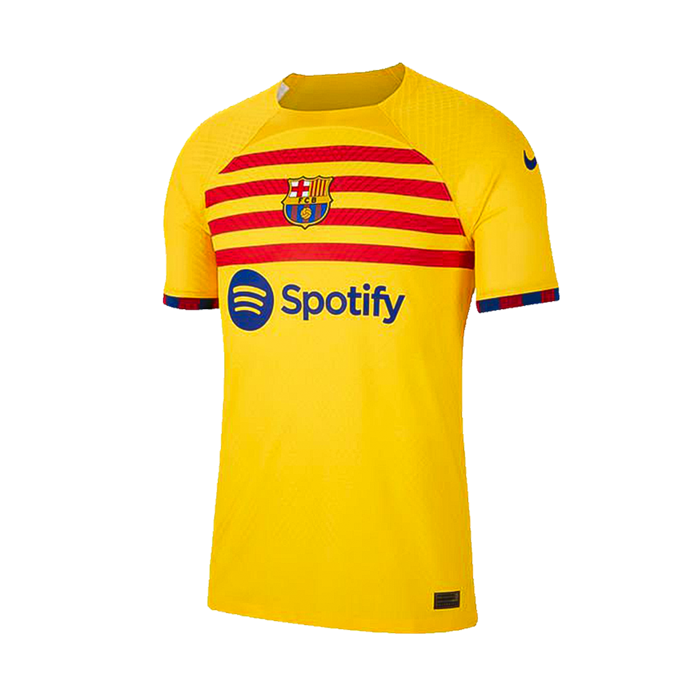

<main class="w-screen bg-green-500">

  <section class="container mx-auto w-full p-4 text-white lg:p-6 px-10">
    <header class="flex items-center justify-between">
      <div>
        <h3 class=" text-2xl font-bold">VR</h3>
      </div>
      <nav>
        <ul class="flex items-center gap-5 text-xl">
          <li><a href="">Home</a></li>
          <li><a href="">Product</a></li>
          <li><a href="">Contact</a></li>
        </ul>
      </nav>
    </header>

    <h1>{{counter}}</h1>
    <section class="lg:h-[90vh] flex justify-between items-center">
      <div id="circleSlider" class="relative lg:ml-9 h-[24rem] w-[24rem] rounded-full">
        
        
        
      </div>

      <section>
        <div class="flex items-center">
          <button (click)="counter = 2" class="w-8 h-8 bg-yellow-400 rounded-full"></button>
          <button (click)="counter = 1" class="w-8 h-8 bg-blue-950 ml-4 rounded-full"></button>
          <button (click)="counter = 0" class="w-8 h-8 bg-slate-500 ml-4 rounded-full"></button>
        </div>
        <div class="flex items-center mt-5">
          <button (click)="prevslide()" [disabled]="counter===0" class="bg-gray-800 h-8 w-8 rounded-full  disabled:bg-gray-400 grid place-content-center text-white"><</button>
          <button (click)="nextslide()" [disabled]="counter===2" class="bg-gray-800 h-8 w-8 rounded-full grid ml-5 disabled:bg-gray-400 place-content-center text-white">></button> 
        </div>
      </section>
    </section>

  
  </section>
</main>